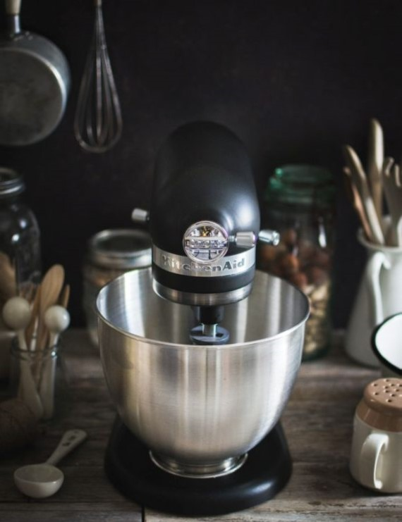
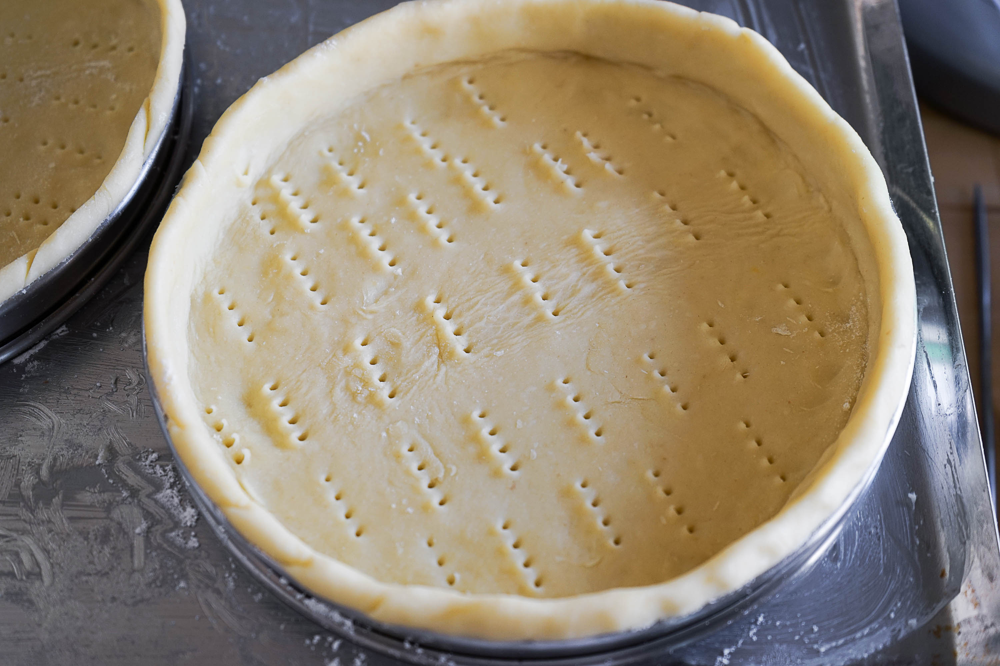

Tarte Aux Fraises

La Pâte Sablée:
- -200g de farine
- -100g de beurre
- -80g de sucre
- -1 oeuf
- -1 pincée de sel
La Crème Pâtissière:
- -50cl de lait
- -100g de sucre
- -50g de beurre
- -3 jaunes d'oeufs
- -50g de farine
La Garniture
- -250g de fraises
Le Matériel:
- -Un batteur éléctrique
- -Une Casserole
- -Une Grille de refroidissement
- -Une Plaque de cuisson pour four
- -Un Tamis ou chinois
- -Un Moule à tarte
- -Un Four traditionnel
- -Une Maryse
- -Une Poche à douille
- -Plusieurs Bols


La Tarte Sablée:
Faire la pâte sablée en mélangeant les ingrédients. L'étaler dans un moule. Piquer avec une fourchette. La faire cuire pendant environ 20 minutes à 180 °C.
La crème Pâtissière:
Faire chauffer le lait. Battre les jaunes d'oeuf et le sucre, et ajouter la farine. Verser le lait bouillant tout en remuant. Une fois que la crème a épaissie, retirer du feu, puis mettre le beurre en fouettant vivement. Laisser refroidir.
Laver les fraises et les couper dans le sens de la longueur. Sur le fond de pâte (refroidie), déposer la crème pâtissière, puis les fraises. A déguster frais. Bon appétit !